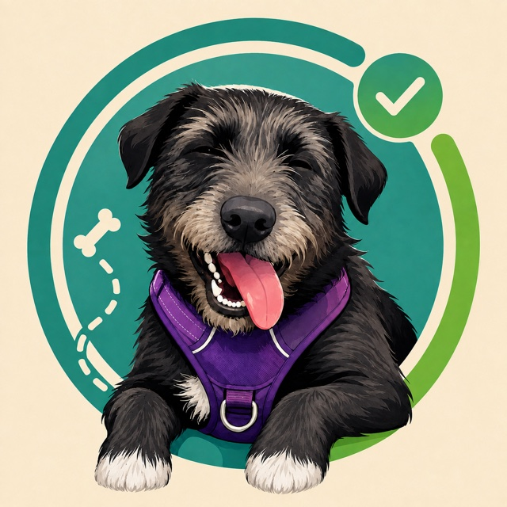

Sessions are not saving. This browser is blocking storage, most likely private browsing. Anything you log now will be lost when you close the tab.
Offline. Your sessions are saved on this device.
This app needs JavaScript to run the guided sessions.